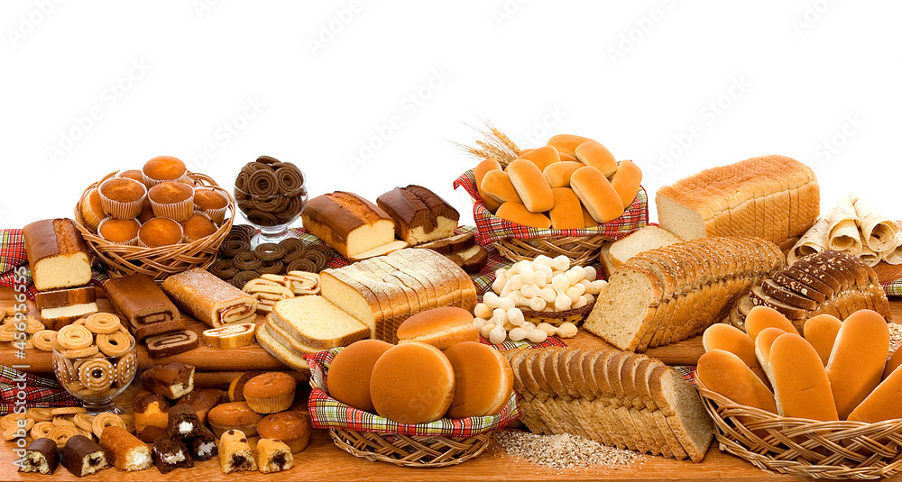

Padaria do José!
Pães quentinhos todas as manhãs, venha já comprar o seu! Também temos bolos, salgados e muito mais!
Conheça nosso cardapio
Pães
- Pão Integral
- Pão de forma
- Pão Doce
- Pão de Milho
- Pão de Queijo
- Bisnaga
- Broa
Bolos
- Bolo de fubá
- Bolo de cenoura
- Bolo de mandioca
- Bolo de milho
- Bolo de laranja
- Bolo de coco
Temos delivery pelo whatsapp: (0xx)9xxxx-xxxx
Horario de Funcionamento
- Segunda-feira: 06:00 as 18:00
- Terça-feira: 06:00 as 18:00
- Quarta-feira: 06:00 as 18:00
- Quinta-feira: 06:00 as 18:00
- Sexta-feira: 06:00 as 18:00
- Sábado: 06:00 as 12:00
Sobre nós
Padaria do José Fundada com amor e dedicação, a Padaria do José é aquele cantinho especial onde o pão sempre sai quentinho e o atendimento tem gosto de amizade. Somos apaixonados por transformar ingredientes simples em momentos deliciosos, com receitas que respeitam a tradição e um ambiente que acolhe cada cliente como parte da família. Aqui, o aroma do café fresco e o sabor do pão caseiro fazem parte da nossa história — e da sua também.
O nosso diferencial
Nosso Diferencial Na Padaria do José, cada receita é feita com alma. Mais do que vender pão, cultivamos memórias com sabor, acolhimento e ingredientes de verdade. Aqui, tradição e carinho são o segredo de cada fornada.